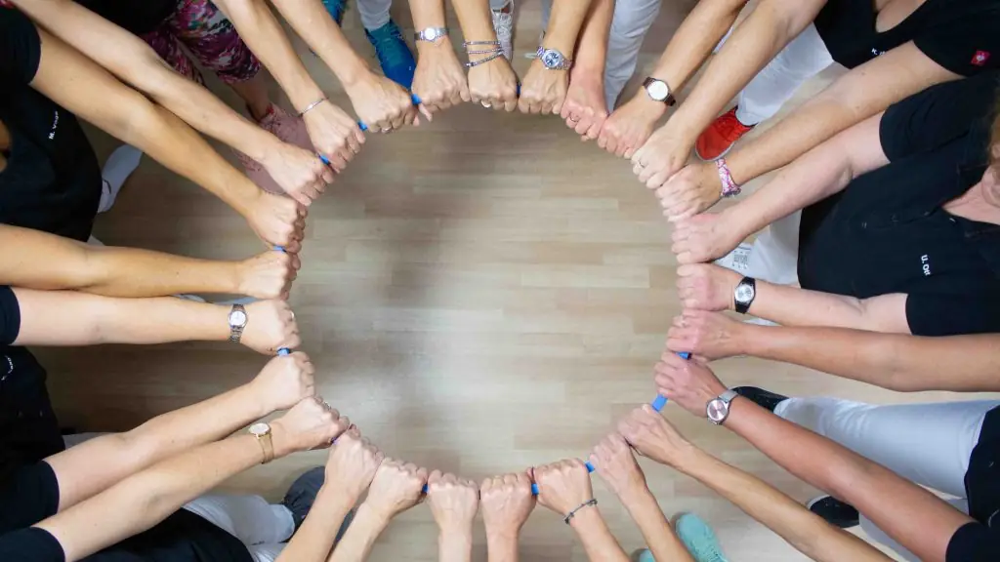

Praxis Grosse · Ispringen bei Pforzheim · seit 1996
Physiotherapie und Osteopathie in Ispringen
Therapie auf Rezept, ergänzende Behandlungen und Training unter einem Dach. Mit 16 Frauen, die dranbleiben – damit Sie es auch tun.
Telefonisch erreichbar Mo–Fr 8–18 Uhr.

Was wir für Sie tun
Unser Angebot hat drei Teile. Das Etikett zeigt Ihnen überall auf der Website, wie eine Leistung bezahlt wird.
Auf Rezept
Physiotherapie auf Rezept
Nach einem Unfall, einer Operation, mit einer neuen Diagnose oder nach einer falschen Bewegung: Diese Behandlungen verordnet Ihre Ärztin oder Ihr Arzt.
Alle 16 AngeboteSelbstzahler
Ergänzende Behandlungen
Für diese Angebote brauchen Sie kein Rezept.
Alle 7 AngeboteKurs & Training
Gesundheits-PLUS: Kurse & Training
Die Therapie ist vorbei – und jetzt? Mit Gesundheits-PLUS trainieren Sie in kleinen Gruppen unter Anleitung von Therapeutinnen und Trainerinnen weiter: für Kraft, Ausdauer, Beweglichkeit und Gleichgewicht..
Alle 11 AngeboteGut zu wissen, bevor Sie kommen
- Früh und spät
- Montags behandeln wir bis 20:30 Uhr, mittwochs bis 20 Uhr – ab 7 Uhr morgens.
- Parken
- 4 Praxisparkplätze im Hof, weitere in der Bahnhofstraße. Bahnhof Ispringen liegt um die Ecke.
- Eine Stufe
- Die Praxis ist barrierearm. Am Eingang ist eine kleine Stufe – rufen Sie an, wir helfen.
- Hausbesuche
- Mit Verordnung kommen wir zu Ihnen nach Hause oder ins Pflegeheim.
Selbstzahler
Osteopathie bei Michaela Grosse
Die Praxisinhaberin ist Physiotherapeutin seit Anfang der 1990er Jahre und Osteopathin mit Masterabschluss (M.Sc., Dresden International University). Viele Krankenkassen bezuschussen Osteopathie – fragen Sie bei Ihrer Kasse nach.
Mehr zur Osteopathie

16 Frauen, ein Team
Physiotherapeutinnen, Trainerinnen und Praxisorganisation, zwischen Anfang 40 und Mitte 60. Mehrere sind seit über 15 Jahren dabei, zusammen haben sie mehr als 35 Zusatzqualifikationen. Einmal pro Woche trainiert das ganze Team gemeinsam.
Das Team kennenlernenDas sagen Patientinnen und Patienten
Platzhalter für echte Google-Bewertungen. Hier 3 aktuelle Bewertungen mit Namenskürzel und Datum einbinden und auf das Google-Unternehmensprofil verlinken. Keine erfundenen oder gekauften Bewertungen verwenden.
Häufige Fragen
Brauche ich ein Rezept?
Für Physiotherapie über die Krankenkasse brauchen Sie eine ärztliche Heilmittelverordnung, bei Kieferbeschwerden auch von Zahnarzt oder Kieferorthopädin. Massagen, Osteopathie, Kinesio-Tape, Kurse und Training können Sie ohne Rezept buchen.
Wie schnell muss ich nach Erhalt des Rezepts beginnen?
Die erste Behandlung muss in der Regel innerhalb von 28 Tagen nach dem Ausstellungsdatum stattfinden. Ist auf der Verordnung „dringlicher Behandlungsbedarf“ angekreuzt, innerhalb von 14 Tagen. Rufen Sie deshalb möglichst bald nach dem Arztbesuch an.
Was kostet mich die Behandlung mit Rezept?
Gesetzlich Versicherte ab 18 Jahren zahlen 10 € pro Verordnung plus 10 % der Behandlungskosten. Kinder und Jugendliche sind befreit, ebenso Erwachsene mit Befreiungsbescheinigung der Krankenkasse. Privat Versicherte erhalten eine Rechnung, die Erstattung richtet sich nach ihrem Tarif.
Was bringe ich zum ersten Termin mit?
Ihre Verordnung, falls vorhanden aktuelle Befunde oder OP-Berichte, ein großes Handtuch und bequeme Kleidung. bitte bestätigen